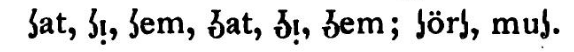

Plea for an American Language
by Elias Molee
Chicago
J.Anderson & Co.
1888
source: https://archive.org/details/pleaforanameric00molegoog
A word should be constructed so that a person who knows the thing may receive all the assistance which the name can give in remembering what he knows, while he, who knows it not, may receive as much knowledge respecting it as the case admits of by merely being told its name.
—John Stewart Mill
The most perfect language would be one combining the excellencies of several languages into one.
—Lord Bacon
I have not, in translating the Bible, taken any special dialect of the German, but the best forms thereof, which I could find.
—Martin Luther
Introductory Remarks
By Peter Hendrickson
(For fifteen years Professor of Modern Languages in Beloit College.)
It is the earnest solicitation of the author to which I have yielded in consenting to write a few introductory remarks to this volume. The consideration that a name more known to fame would serve his purpose better has little weight with the author. His faith in his cause is as boundless as his love for it; and he is content to rest his cause on it's own merits.
It is Gladstone, we believe, who has estimated that in a not very remote future the English language will be spoken by one thousand millions of the human race.
Such a prediction, coming from such a source, may well stir the heart and arouse the pride of everyone who calls the English his mother tongue. Indeed, the unification of the whole human race is a thought prominent in our time. But speculations on this theme, no matter how agreeable they may be, would carry us beyond our purpose, and we must confine ourselves to matters which more nearly concern the present.
A glance at the rapid extension of the area over which the English language has become dominant, leaves no doubt of the greatness of its opportunities. The English may already be called a world-language, as the English-speaking race is a world-winning race. But in the future, its extension will not depend, so much as heretofore, upon conquests or discoveries, nor wholly upon the changing currents of commerce. It must show its inherent fitness to rule, not by its political institutions, or the tonnage of its vessels, but by its power over the minds of men. It must gain its supremacy by the willing consent of the world.
But in order to do this, it must, as it seems to us, make a preliminary conquest which shall restore it to supremacy over itself. What is meant by this, space will not permit us fully to elucidate here. But we may say, briefly, that no one gets willing obedience where he imposes unnecessary burdens. To gain cheerful acceptance, a language should not require to be conquered separately and in succession by all the senses. When it has become familiar to the ear it should not be a stranger to the eye. It should have no masks and no mysteries. It should be friendly to the understanding, and deal kindly with the memory. It should inspire confidence and gain strength by its simplicity and directness. Can any one be blamed for being suspicious of a language whose noblest word, knowledge (nolej), wears a dress twice too large for it?
Truthfulness and practical common sense are marks of the highest enlightenment. But these will condemn a vicious taste which clothes an otherwise common thing with reverence simply because it is unfamiliar. Almight is as vulgar to the perverted taste as omnipotence is to the simple Anglo-Saxon mind. The prime requisite, to gain the respect of others, is to have respect for one's self. We do not respect him who borrows of others when he has abundance of his own. Ken used to be a strong and familiar word to our ancestors. How would star-ken have served for astronomy? or man-ken for anthropology? Our author proposes lore, and would substitute plant-lore for botany. How would a child fare with "nolej of plantlore" for knowledge of Botany? Would it lessen his respect for his mother tongue?
A writer in "Scribner's Magazine," about fifteen years ago, in speaking of the difficulty the Japanese found in adapting their old forms of speech to the flood of new ideas which suddenly had come upon them, says that "they were talking of adopting ours, but did not like our irregular verbs and arbitrary pronunciation." Shall we class that among the lost opportunities? The writer adds: "It is a pity that we cannot meet them half way, and give our language a little of that simple euphony which would make its acquisition easier for them as well as our own infant learners. The punitory miracle at Babel has set up barriers all about us. How shall we beat down the wall for our allies in Japan?" Yes; how shall we? This is a question that must be answered, and the sooner the better. It has been delayed long enough.
We are constantly improving everything that we use, except what we use most—our language. Every tool in every trade is made better and more convenient, year by year. But language is a tool we cannot lay aside long enough to have repaired. This is the prime difficulty in the way of language reform. There have been made isolateed attempts for centuries to improve the old, or to invent a new language, and fit it for universal adoption. All have met the same fate, and for the same reason. The changes proposed have been too radical. But in spite of all failures, similar efforts are multiplying, and it seems as if the civilized world were on the eve of some great movement in this direction. It is, as they say, "in the air."
Among the attempts most recently made in this direction, is Volapuk, which has gained the ear of the world in larger measure than any other, but its race is probably soon run. To attempt to make a special language for a special purpose, like commerce, travel or diplomacy, must, in the nature of the case, be a failure. In travel, in diplomacy, and even in trade, men want to express their thoughts with ease, with grace, with force and freedom. This they will never be able to do with a mechanically constructed language, which is no one's mother tongue, which has no history to make it respected, and no literature to make it loved. A language without a past will be a language without a future. To create a new language for a special convenience is an extravagant folly; and to get away from the language on which a people's mind has fed and grown, and by which its thoughts and feelings have been expressed through generations, is as impossible as to run away from one's shadow. But this does not imply that errors and defects have become sacred because they are in the realm of speech.
Our language is like a tangled forest into which seeds have been wafted by every wind, and which have grown in disordered and bewildering luxuriance. The child is lost in its mazes and labyrinths, and the man is bewildered with its abundance. Instead of this is should be like a royal garden, where nature and art had mutually aided each other; where the grafting knife and pruning hook had been guided by a cunning hand, and where every path leads to some familiar spot, from whence a child could always find its way home.
In a recent editorial discussing the merits of Volapuk, the Chicago Tribune, which has always been friendly to language reform, says:
But the fact that learned men have devoted time to the invention and propagation of a proposed universal language, shows how deep is the realization of its necessity by thinking people, whatever their vernacular; and the main principle kept in mind in the construction of Volapuk, and used with unquestionable advantage by its advocates — its fonetic character — indicates precisely the direction in which some living language must be modified in the process of becoming universal. There is nothing in the history of civilization to encourage the belief that any language, however attractive, can be artificially extended. Conquest, not followed by commerce, cannot do it.
In closing the same article, the writer says:
By fonetic changes, consistent with the genius of the language, sound and spelling can be unified; and in time, as it becomes more and more the universal language, it will fall into an artistic mold in which simplicity will preserve its essence without diminishing its power or impairing its beauty.
This expresses, with striking accuracy, the aim of the author of the present work, though it implies a leaving to chance one essential feature of the reform for which the author has sketched the outline of a definite plan. There is not in the history of our language adequate ground for the belief that it "will fall into an artistic mold" if only its "sound and spelling have become unified," any more than that the forest will of itself become a park. In addition to a simplified, fonetic spelling, the thought and taste of the time need to be directed towards the purification of its vocabulary. There is need of a clearer conviction of the fact that the true economy, as well as the source of power, lies in development from within, rather than accretions from without.
The leading purpose of the author is mental economy. This is to be reached through three main channels. (1) By simple and correct spelling; (2) by a gradual purification of our vocabulary, aiming to enrich our store of words from our own Anglo-Saxon and allied sources, making the words self-developing and self-explaining; and (3) by the largest practical regularity of grammar.
In these changes, however, one thing should not be lost sight of, namely, that no change can be considered practicable, and no reform commendable, which secures any advantage, no matter how desirable, at the expense of symmetry, euphony and force; and this, I think, the author has no where lost sight of, though he has probably in some directions gone farther than most readers will consent to follow.
This is natural. Every reformer must, in the nature of the case, be more or less an iconoclast (this word I have smuggled in, for it has met the author's especial disapproval.) A reformer who does not for a time go ahead of the masses, would have too little force to arouse either sympathy or opposition, and should more properly be classed among politicians than reformers.
The present effort is remarkable, I think, in one essential particular. It is not the dream of an isolated idealist or recluse. It is a growth in the author's mind out of his own needs, and is a voice directly from the people—from that comvination of our population which is characteristic of our great interior. This will be more plain to the reader by a few references to the life of the author.
Elias Molee was born in Racine County, Wisconsin, in 1854, and is the son of one of the earliest immigrants to that State from Norway. He grew up among American, German, Irish, and Scandinavian neighbors. While the language in the district school which he attended was English, he would daily hear three or four languages spoken on the play-ground. As with so many thousand other children in our land similarly situated, there arose a struggle in his mind and heart between the two rivals, the language of the hearth, his mother's tongue, and the language of the school. The influence of such circumstances upon the mental habit and the character of a child can be understood only by him who has intelligently experienced it. Upon a dull mind, I think this constant strain has an enfeebling effect. It disturbs and disquiets the whole nature. Neither mind nor heart are fully absorbed or at rest any where. Upon the alert and critical mind, it has quite another influence. It arouses curiousity, stimulates observation, exercises the judgment and expands the mind. It acted thus upon the young mind of the author. He became ambitious to learn all these languages. He acquired the English in the school, the Norwegian-Danish at home, but the German was not so easily laid hold of. He therefore, while yet a small lad, gained permission of his father to go to a German who kept a country store on the borders of a German and American settlement, to seek employment. His earnestness, the already acquired master over two languages, and his desire for the language of "das Vaterland" in addition, was just the recommendation that gained favor in the sight of the German storekeeper. From that time to this, one thought has been uppermost in his mind. The spelling of the English language impressed him as a cruelty to the native-born child and more than that to the foreign-born. Wherever he found in any of the other languages some feature in which he thought it excelled the English, he longed to see it appropriated by his adopted language, the English. We are here building up an American nationality out of elements contributed by various nations. It will be a grand nation. Why cannot our language also draw to itself the best features of allied tongues and conquer the world?
Shall the American nation, with its grand opportunities with a future before it like that of no other people, continue its career without an effort to brush off the defects which cling to its speech? Shall this practical, common sense people, that in other things so well understand the value of time, let every generation of its multiplying millions through all ages, waste at least three years of its best time in the often vain effort to learn to spell? Shall the ever-questioning, quickly absorbing mind of the child forever struggle with sounds and words which suggest no thought and bear the likeness of no know image on earth or in heaven, whil the rich treasures of thought and feeling are waiting on all hands to inspire and fructify it? Shall the wealth of exact science, which is the boast and glory of our age, be denied to the multitudes who have neither the time nor the means to spend years in learning dead languages, from whose exhumed relics the jargon is constructed which is called the nomenclature of science? These and similar questions it is which since childhood, have given the author no rest, until after thirty years of quiet picking, gathering and arranging, he has finally rehabilitated an "American" or Teutonic-English language, which is harmonious in its parts, beautiful in its simplicity, pliable in every limb, well sounding to the ear and capable of a growth and self-developement adequate to any measure of intellectual expansion. Such, at least is the hope and faith of its author.
His thirst for a more thorough knowledge of languages early led him to the Norwegian College at Decorah, Iowa, where, besides modern languages, he acquired some knowledge of the classics. From there he went to the American Academy at Albion where he graduated. Later he prosecuted his linguistic studies at the University of Wisconsin, constantly in consultation whith scholars in regard to the one theme about which all his thoughts centered. The gaining of a livelihood has always been a secondary consideration with him, so that, in order that this obtrusive necessity should divert his attention as little as possible, he has in recent years settled down on a farm in Dakota, and thus, hampered with less care, been enabled to complete the preliminary sketch of his work.
Like that of all men who are gifted with the power of concentrating their energies for a life-work upon one theme, so the author's mind has been focused upon this thought till it burns with a steady flame, and is inspired with a faith that will listen to no suggestion of defeat. His enthusiasm is not demonstrative, but it is nevertheless contagious. And though my conviction may in part be due to this contagion, I cannot deny that the system here proposed seems to me, in its essential features, the only conceivable method by which the English language can be restored to a supremacy over itself, and be made entirely worthy of the commanding position which we trust its future destiny may have in store for it.
There is one thought which I would urgently commend to the mind of the unprejudiced reader. This is no scheme gotten up to create a sensation or to gain selfish ends. Whatever judgment the world may pass upon it as a system, let it be assured that this is a work of conscientiuos devotion to a noble purpose. It is a cause to which the author has unreservedly devoted his whole life. He is a native-born, patriotic and loyal citizen of this country, and seeks only its glory and its gain. This work must not be classed with the injudicious attempts to crowd a foreign language into our schools, or as in any way calculatted to detract from our language by emphasizing the superiority of any other. The plan proposed is largely one of mutual concession, but in all essentials the English stands unshaken on its foundation, yielding to no other except where it seems to result in manifest advantage. The plan should arouse no national jealousies; its aim and spirit is to draw all together into a more natural and conscious union.
Ours is a composite nationality, yet largely in a nascent state. The process of welding together the different elements is the real national life now in progress within the borders of these free States. On the surface is the scum of politics and the noice of bread-winning, but below, in the calm, unseen deep, goes on the slow process of absorbing and assimilating into unison the diverse elements of population which gather within our borders. Any apparent harmony, any temporary prosperity, will be evanescent and delusive unless there is constant progress towards a more perfect union of the various elements now contributing materials towards the forming of the ultimate homogeneous American People. The controling and molding Power exerted by the genius and the free institutions of our early settlers is beyond doubt the mightiest influence ever felt in the history of mankind. This power will also in the future be adequate to shape the destinies of our country. But it may not be unreasonable to assume that a gradual simplification of our language in the lines here proposed will facilitate the outer unification and strengthen the consciousness of inner relationship between the representatives of the Teutonic race, of which our population in the main consists.
There are a number of subordinate features connected with the proposed plan of reform to which I am not prepared to assent. The same will, no doubt, be the case with a majority of the readers. Our vocabulary is so largely recruited from the Latin that an attempt at a total expurgation of words of this origin would seem not only futile but enfeebling. A language, as well as any other institution, must bear the traces of its history. This is neither a shame nor a disadvantage. But a too ready sacrifice of its own for that which is alien is a fatal weakness. A return to a healthy measure of self-reliance and self-development, without aiming pedantically to erase all traces of its histoory, will give new clearness and force to our English language. The effort should not be to blot out its history, but to relieve the language of its inherent weaknesses and assumed burdens. No word should be condemned, no matter what its origin, unless a substitute can be found equally as good of purer lineage. But the very principal of historical necessity will of itself in time produce modifications in the direction here suggested. This reform itself springs forth as a new shoot from our historical soil. In some way or other the language of the future American will reveal the elements from which the nationality is compounded. The question here presented is: shall the change be a conscious effort directed by intelligent purpose, or shall it be left to mere chance?
The author does not insist on the minor details of his scheme. He is more conservative than reformers as a class. His system of numerals will probably not meet favor; his alphabet will need improvement; the introduction of new sounds is objectionable. Everything may be regarded as suggestions submitted for intelligent discussion, rejection or approval, except the three main features—a more regular grammar, a freer return to native sources for additions to our vocabulary, and a simple spelling. It is an invitation to the intelligent men and women of our land to join in a conscious effort to make the American language more homogeneous, more pliable, less exacting on the powers of the learner, and more truly an exponent of our history as a composite nationality. Such changes would facilitate its progress and justify its claims to larger dominion.
Its introduction, if favorably received, should not be a revolutionary one. The changes proposed should be set before the minds of the people and the rising generation as an ideal towards which efforts more or less emphatic should be directed, beginning with the reform of spelling, and correcting the taste as regards the use of Anglo-Saxon words. The bondage to a dictionary should be ended, and a larger liberty in the forming out of our own material any word whose meaning would be evident from its parts. The change would be so gradual as to involve no serious inconvenience.
These remarks must, in a measure be apologetic. The author is conscious of defects in the method of presenting his thoughts. His English is at times inaccurate and unclear. For this he craves the reader's indulgence. It is in part due to circumstances which at present could not be controlled. He is a scholar in the field in which he labors; but as he has spent so much time in medittating on what the English language ought to be and might have been, he may be pardoned for not always remembering what it is. But this will not detract materially from the value of his work in the minds of those who are in earnest about an important cause.
Chapter p.
Many Speakers No Sign of Goodness of Language
The fact that a language is spoken over a great extent of territory or spoken by a great number is no indication of superiority or inferiority as a medium of communication. The Chinese is an inferior language and yet is spoken by the greatest number on account of numerous births and ancient conquests and annexations. From the little country of Spain with only a few millions inhabitants her language spread over Mexico, the West Indian Islands, Phillipine Islands, and all South America, except Brazil. The cause was war and discovery. The little insignificant country of Portugal has succeeded in planting her language in many extensive tracts of territory in Africa and all over the Empire of Brazil, an empire which equals that of the United States in area, excepting Alaska. Again the cause has been war and discovery. The same may be said with regard to the Russian language.
The English owe the possession of the Dominion of Canada to the discovery of foreigners, namely John and Sebastian Cabott, two Florentines, who had resided for some time in England, and who sailed out under the English flag in a north-westerly direction A.D. 1497, discovered Labrador and other parts further south. They brought back as specimens of the products of the country 2 Indians and 3 turkeys. Cheap acquisition! Canada proper was wrung from France by important help from the American colonists. Holland discovered New York in 1609. They commenced settlement in 1613 at New York and later in New Jersey, Pennsylvania and Delaware. By war and treaty England has taken from the little enterprising Dutch sailor people the following countries: New York (then called New Amsterdam), Australia (then called New Holland), Tasmania (then called Van Diemens Land), and the Cape Colony in Africa. The Dutch, through their diligence and daring, went ahead and discovered, but the the English took it away from them. The English have been hard on the Dutch and on the Irish. That is one cause of the spread of the English language. This tongue got a start in the United States, and those who came here afterwards learned the language as a matter of necessity. In this way the language has obtained a strong foot-hold although only a minor portion of the inhabitants of the United States can trace their ancestors back to English origin.
The spread of the French language is owning not to war nor colonization, but in small degree. Fashion and imitation are potent factors that have been at work here. Louis XIV of France had the most elegant court of Europe. This he could have, being at the head of the richest and most powerful nation at the time. Other courts, dazzled by this splendor, imitatted the French manners and language. Imitation was more powerful and more unreasonable then than now. It was further found necessary to adopt the French as a language of diplomacy and international communication, because it was felt that Frenchmen were unable and unwilling to learn any other languages. This linguistic inability of the French is proverbial in Europe. Even the French Minister at Berlin during 1870-71, at so important a time as the Franco-German war, could not speak German, and was hence less prepared for his calling that a foreign commercial traveler. The French is not a good people's language. Hervert Spencer criticizes it very severly in his "Study of Sociology." It employs a double nominattive and a double negative, as, "votre frere ou est-il?" and "il n'est pas; a clumsy comparison of adjectives, as, le plus beau for finest. It is very badly spelt, very irregular and, as Prof. G.P. Marsh says, very full of idiotic expressions where words mean something entirely different from what they appear to mean. It has no neuter gender and is very mixed and arbitrary. The language is pronounced with an ill-sounding nasal twang. Rev. Schleyer, author of Volapuk, says French sounds very badly in singing. Yet in spire of all these defects, French became fashionable through the elegance and wealth of the royal courts of France. The common people has never stood very high for intelligence, and never will, because it takes to much time and money for poor children to master the arbitrary spelling and mixed and non-self-explaining words of the French language. The French tongue, as we shall show further on, is only a little better as a means of popular education than the present English.
Chapter b.
A Lifting Language
That a language may lift a people up into knowledge and self-respect on a large scale, it must be self-explaining, pure and homogeneous like the ancient Greek, Irish, modern German and Skandinavian. That is, a good language must be readily understood on a wide variety of subjects with the least resort to dictionaries. It must above all things be expressive and transparent. There is only one way of making the language shuch, and that is to proceed from the known to the unknown; to build from within. Discard borrowing and take to self-development, so that the common words, which all understand, may help to explain and remember the less frequent words. For instance, the Greeks took the following common words to build higher self-explaining ones, as ichthus was the regular common name for fish. Every Greek child knew what ichthus (fish) meant, also that logos meant learning or lore; now, when the wonderfully wise Greeks wanted to give a name to a certain kind of learning or logos, which had for its subject matter fishes or ichthuses, they said with a beautiful simplicity ichthyologia, A.S. fisc-lar (fishlore), German fischlehre, Skandinavian fiskelare, American fish-lore. How expressive and picturesque! How poetical ichthyologia must have been to the ancient Greek man and woman who spoke every day of fish as ichthus and of lore or learning as logos or logia. Ichthyologia was just as expressive to them as shoemaker, schoolhouse and breastbone (sternum) are to our children. What would Plato or Socrates have said if some Greek clown had borrowed the English fishlore or the German fischlehre? They would certainly have said fishlore or fischlehre is not in harmony with our common Greek words. We must build from our own known words, so that our Greek children and laboring men and students of other branches of knowledge can readily understand and remember what they hear spoken on the strangest subjects. We must therefore, fellow-citizens of Greece, develop from our own material and say ichthyologia. How expressive this word is! How full of open spreading vowels to make the word euphonious. The Greeks would never have mounted up high with the English language, for the spirit moves early in a harmonious, thought-aiding and hoomogeneous speech. The Greeks had Demosthenes, the greatest among orators, Homer, the greatest poet. Pope says Homer had the finest ear and he always preferred in his verses open spreadinhg vowels of which the Greek language is so full. Aristotle was one of the greatest philosophers. Even such a scholar as the learned Irishman, Bishop Whateley, is pleased, even to his day, when he can show in his rhetoric and logic agreement with Aristotle. The Greeks were as brave as they were wise. Think of their struggles at Marathon, Thermopylae and Platae! Herodotus was the greatest historian, Euclid the greatest mathematician and Socrates the purest moralist. What enhances our admiration for the Greeks is the fact that they had no other people to copy after or borrow from. They started theatres and wrote comedies and tragedies. Who is not filled with admiration and gratitude at hearing such names as Miltiades, Themistocles, Perikles, Demosthenes, Socrates, Epaminondas, Alexander, Plato, Plutarch, Strabo, Thucydides, Aristophanes, AEschylus, Sophocles, Euripides, Herodotus, and Homer? The Roman literature is little more than a copying after the Greeks. The Greeks had a harmonious, self-developed, euphonious, self-explaining language, like the German and Irish. The Germans excel in learning in our time, as the Greeks did of old. No people using a mixed, arbitrary language has got to the front, and never will, because understanding and remembering is made too difficult on a large scale. The ancient sons of the "Emerald Isle" stood very high for learning in olden times, before they forgot so much of their own euphonious and self-developed Irish tongue. People came from all parts of Europe to acquire wisdom and eloquence from Irish scholars. After the Irish tongue had been oppressed by the English law and language, they have gradually sunk in intelligence. This is not to be wondered at. England also stands low with regard to literacy. The Atlantic States in our country have gradually retrograded during the last fifty years and are continuing to go downwards. Even those who do go to school part of the year enough to learn to read easy pieces, understand far less of what they read than those people that are blessed with self-developed and self-explaining home words, as the Germans, Skandinavians and the former Irish. I shall show further on that under equal advantages or adversities the English speaking people will inevtiably fall bvehind as a people in popular education. England and the United States have hitherto enjoyed special advantages. Englad by her extended commerce and foreign colonies has subsisted to a great extent on the sweets of other lands. She has drawn largely on the future by her immense "national debt," which every one calls an evil to the people at large. The United States have possessed a land that is probably the best country of its extent in the world. Long navigable rivers, abundant timber, plenty of coal, iron, gold, silver and green pastures, and over and above all, a virgin soil, few wars and comparatively small population, and yet the English speaking people stands the lowest among the Germanic nations in literacy. Not because they are less talented, less strong and enduring, but because the English is an unfortunate language. 97 per cent. of the people in Germany, Scandinavia, Holland and Iceland, over ten years old, can read and write, and that is the highest point reached in literacy by any people on the globe. There are always a few cripples or weak persons who cannot be taught. In the northern States where there is found the greatest proportion of foreigners, there is most wealth and intelligence. In the South, where the Old Natives are less mixed by immigration, the white population stands far below the whites of the North. It must also be remembered that the greatest amount of ignorance has come to the United States from English speaking countries, not from Germany, Skandinavia and Holland. English wastes the time of children in mastering the cruel spelling which the majority of laboring people forget in after-life. It wastes the time in memorizing the definitions in school-readers and in searching for the meaning of words through expensive dictionaries. They soon forget the meaning of those arbitrary borrowed words, because they are not ingrafted into the mind in childhood by means of the ever recurring common words. 53 per cent. of English words are taken from all the languages of the world and thrown together in one chaotic mass. The only parallel to this much borrowing are the Turks who have taken half of their words from the Arabian and Persian. They having taken so much from one source makes it more homogeneous and self-explaining than English. There is no honor in borrowing. It is the easiest method possible by which to enrich language.
Mere borrowing requires neither love, learning nor ingenuity. It is only necessary to take without pay what others have made ready. But to so develop our own material, whatever that may be, that our language will vividly express all ideas of ancient or modern times possessed by ourselves and others, with clearness and euphony, that is something which requires love, learning, patience and talent. Then we will have a language that we can call our own, a language we can understand on all subjects, something we can love because it is our own and good to us, something that is kind to our understanding and memory. The impure English cannot be loved as the pure German, Scandinavian and Irish, because English is so unkind, so arbitrary and so much mixed that it belongs in particular to no people. This mixture of languages was forced into England by William the Conqueror after the defeat of the English at the battle of Hasting A.D. 1066. The English speak, therefore, as a conquered people. They speak as they do because they were conquered by the Norman French in 1066. The foreign conquerors learned the most common words of the people, as, father, mother, son, daughter, house, ox, cow, land, stone, etc.; but when they wanted to express higher intellectual ideas, they dragged in their own Norman French words. This accustomed the people to arbitrary-word mixing and soon wore off the feeling of incongruity.
The value of a lifting language, a language that could elevate the masses by self-explaining and thought-quickening words, was probably never thought of or cared for in those days of selfishness, violence and ignorance. I have given you a slight indication of how the ancient Greeks and the modern Germans and Scandinavians develop from within out of their own well-known material, so that even rare words explain themselves. Now let me show you a few Irish words.
Chapter t.
The Irish Language
| Irish | English |
|---|---|
| Fear (pr. fahr) | man |
| Feasa | of knowledge |
| Fearfeasa | prophet, that is knowledgeman. |
| Thiga | of a house |
| Fearthiga | householder |
| Fean | music |
| Fearfean | musician, literally, music-man. |
| Bean | woman, female. |
| Siga | spirit |
| Beansiga | a fairy woman |
| Brat | garment |
| Taisa | of death |
| Brattaisa | winding-sheet, lit. death-sheet. |
| Cu (koo) | dog |
| Mara | sea |
| Cumara | otter, lit. sea-dog. |
| Laoc | calf |
| Laocmara | seal, lit. sea-calf |
| Mac | son |
| Alla | cliff |
| Macalla | echo, lit. cliff-son |
| Tira | wold, turf |
| Mactira | wolf, lit. wold-son (son of the turf) |
| Teac | house |
| Osta | entertainment |
| Teacosta | hotel, lit. entertainment-house. |
| Buan | enduring, lasting |
| Caom | mild, gentle |
| Claon | inclined |
| Cuma | grief, Ger. kummer |
| Crom | bent, Ger. krumm |
| Deag | good |
| Dearb | true |
| Mo | my |
| Dian | vehement |
| Grad | love |
| Diangrad | vehement love |
The plurals and genetive case end frequently on vowels. It has a very full inflectional system. Adjectives and nouns have plural signs mostly on vowels.
| Single | Plural |
|---|---|
| Ran, white | bana |
| Min, smooth | mine |
| An bo dub, the cow black | Na ba duba, the cows blacks |
| Cu, hound | ca, hounds |
| Dia, God | deitha, gods |
| La, day | leitha, days |
| Mi, month | miosa, months |
| Ua, grandson | ui, grandsons |
| Seamrog, shamrock | seamroga |
| Clearseac, harp | clearseaca, harps |
| Cno, nut | cna or cnai, nuts |
It is full of short words as well as long clear compounds, as, do, to; fa, under; le, with; o or na, from; and fearfeasa, prophet; laocmara, seal (sea-calf).
The Irish language has a separate passive form, as the Greek, Latin and modern Skandinavian, as buailtear me (I am struck; Skan. jeg bankes).
The complexity of the language is a drawback in Irish as in German, it makes it more difficult for its admirers to acquire.
The Irish tongue has the same self-devlopment, the same crystal transparency as the Greek and German. It is more full of open spreading final vowels, which help to make the language musical. It is to be deplored that such a clear popular language has been so opressed.
Ah! the pleasant Tongue, whose accents were music to the ear.
Ah! the magic Tongue, that round us wove its spell so soft and dear.
Ah! the glorious Tongue, whose murmur could each Celtic heart enthrall.
Ah! the rushing Tongue, that sounded like the swollen torrent's fall!
Rev. M.M., Ballads of Ireland
Sweet Tongue of our monarchs, our saints and our sages,
Sweet Tongue of our heroes and free-born sires,
When we cease to preserve thee our glory expires.
Anon
Ulrich J. Bourke, President of St Jarlrath's College, Tuam, says of Irish: "It is flexible and harmonious as Greek, soft as Italian, and expressive as German."
The Most Rev. Daniel O'Connor, Bishop of Slades, aptly says: "Oh! would that our copious, melodious, soul-inspiring, and heart-moving language were received and had become universal! And whyu should it not? SHould it not be our pride and our boast to have such a language, while other countries rejoice in their jargon—in their compound of various languages?" Great many societies are being formed in Ireland to preserve and revive the old language. Holland has its own language with 4 million speakers, Norway 2, Sweden 4.5, Portugal 4. Ireland having about 6 millions, and an island country, could easily have her own language for home use. Scholars must study foreign languages anyhow in all civilized nations. Rev. Bourke says very forcibly in his Irish Grammar: "If we do not cherish the language for its own sake, why, let us do it for our own. We know the language of a nation is the exponent of a people's antiquity, the index of their refinement, the mouth-piece of their history, the type of their freedom, the echo of a nation's greatness and fame—shall we then let our language die?"
Bishop O'Connor says: "Are not Scotland and Wales to be admired for their patriotism? and are they not a reproach to us? But why do their languages prevail among them? Because they are used as the common language of the country; because they are taught at school and encouraged by nobility and gentry, instead of being ashamed of their mother tongue—as, I am sorry to say, we are generally found to be of ours—or, rather, are sought to be made so by those who are interested in suppressing it as a mark of our nationality."
"Unless this shame of the language of our ancestors cease to exist and a kindred feeling be cultivated generally, and especially by the middle classes of our countrymen, in vain do you labor."
"If I could take the liberty, I would recommend that in every parish in Ireland there should be an Irish teacher, and that as the ear governs the tongue, it may be familiarized by hearing the language spoken at school, at home and abroad; if it were only thus to employ some poor men and women to speak nothing but Irish in the hearing of children, who, in a short time, would acquire a facility in a common place colloquial way."
Rev. Bourke says: "Every nation cherishes its own language; it cherishes it even in death. The Greeks loved their language the more, the more it was banished by the Turkish foe. From the ashes of thraldom they have brought it forth—though bearing another name—fresh and youthful as the phoenix rising in its new creative power, after a literary slumber though ages of woe. The Jew in his exile loves, did his captive sires of old, to sing out in his own sweet Hebrew his sorrows in a strange land. And shall the Irishman, in the land of his birth, neglect to cultivate what has been justly called "the language of song—the language of the heart—the sweet mellow language of Eire go bragh?"
Chapter d.
Injury of Unsystematic Spelling
English orthography is so bad, so impracticable, that I shall only spend a few words oon this subject for the purpose of filling out the argument. The only true mode of spelling words and the system easiest to learn by children of all nationalities and stations is to have "one letter for one sound, and only one sound for one letter." Now we begin by telling the child that this short round-like character is called "a" as "a" in ale. The child follows and says "a." He has now learned the name of that character. But he is soon bewildered; the same letter without any modification is differently pronounced in 1 ale, 2 at, 3 arm and 4 all. Then there are hosts of other combinations that stand for the first sound, other arbitrary combinations that stand for the second, third, fourth or fifth sound. Again the same letter or combination of letters stand at one time for one, and at another time for another sound. There are many letters for one sound, and many sounds for one letter. There is no guiding rule. Mental energy is wasted. Each word becomes a special act of memory, like the Chinese characters. It makes it difficult to learn to read and write. Those who are poor and have but little time to go to school are scared away or cannot master it; hence such spelling must increase ignorance. The wealthier classes who can afford to send their children to school long enough to learn this orthography, wastes so much time in doing so that they cannot learn as much of arithmetic, geography, grammar, history, laws of health, civil government, and music. All must be content with less knowledge and less accomplishments by reason of the irregular spelling. In Germany and Skandinavia no spelling-book is used. There is no need of one, because they spell according to sound. After the letters are learned in their primers, they spell a few words from their reading lessons and copy the reading lessons upon the slates, and as the same letter always has the same sound, children soon get the hang of spelling without waste of time. Spain, Germany and Skandinavia improved their spelling long ago. In American common schools the principal object is to learn to spell. There is no useful knowledge in this early and late spelling, and spelling and spelling. It is as time-wasting and impracticable as the Chinese sign-writing. In both cases does every word necessitate a special act of memory. Both are hindrances to education. Both are degrading. The English are fortunately waking up to see this injury. Ex-Premier Gladstone, the "Society of Arts," the "Association of Elementary Teachers," many ministers and editors in England are in favor of phonetic spelling. In the United States and Canada there are a number of journals advocating the system. We have many Professors in Universities and Colleges in its favor, among which I can name such learned scholars as Prof. Francis A. March, of Lafayette College, author of Anglo-Saxon Grammar and Reader; Prof. W.D. Whitney, of Yale College, author of "Language and the Study of Language;" Prof. T.R. Lounsbury, of Yale College. Ben Pitman and the Longley brothers have done much good for the cause by their monthly journals and boooks. Prof. Boyd estimated about 30 years ago that it required English children three years longer to learn to read and write than it did for the children of Germany, Skandinavia and Holland. Major Chas. Sotry, of Chicago, estimates the time wasted to equal from 5 to 7 years, but I have preferred to take the shortest time, three years. It is again estimated by Prof. Boyd and others that it costs the American people $10 extra every year on account of unsystematic spelling. Having about 10 million school-children, and an extra cost of $10 for each child amounts to a loss of 100 million dollars every year for this defect alone!
(digitizer's note: adjusting for 2021, there are ~50 million in public school. $10 would be ~$279 adjusting for inflation. This is a loss of ~$14 billion every year.)
I said on the title page that the present English was a national misfortune. Let me ask, is it not a national misfortune for the country to lose 100 millions annually and have every person robbed of three years of his or her life on account of spelling? And yet our arbitrary borrowing is of greater damage still, which I shall endeavoor to prove in the next chapter. The loss of time and, what is worse, the loss of useful life-guiding knowledge, occasioned by taking expressions of less frequent ideas from strange tongues not explained by well-known common words as in Greek, German and Irish will probably amount to much more than another 100 millions. But more on this point in the next chapter. The only ones who can learn English spelling are type-setters. No others can learn it. At a school examination in Houston County, Minnesota, in 1876, only two teachers out of 48 could spell correctly the 20 words give as tests. At the University of Wisconsin at Madison, the senior class, the graduating class in January A.D. 1874, handed their Professor of English written essays as required, but only one high-class student of the whole number had spelled each word in his composition correctly, though all had chosen their own subjects and their own words. Having taught English school more than 10 years, I have bene present at a great number of examinations, and I undertake to say that English spelling cannot be learned by the people. Only type-setters and occasionally an old-fashioned school-teacher, who values orthography above all other knowledge, can spell.
Sir Walter Scott spelt 5 words wrongly in a receipt given for money received as initiation fee to a certain society (spelt by him sosciety) Scott's manuscripts had always to be corrected by the printers. Shakespear has at different times spelt his own name in 128 different ways. Spelling does not show the derivation of words except occasionally. There is no "s," and no "g," and no "l" in the old words for island, sovereign and could. Comparative philology is now such that the relationship of words can be traced and proven though the words compared have not a letter in common and differ in meaning as much as black and white. The proper function of spelling is to give a true picture of the spoken language, so that he who sees a word may know how it is pronounced, and he who hears a word may know how it is written.
But even supposing spelling did show derivation of words, which it does not, except in part, it will hardly be demanded by an education-loving people that 999 men should be burdened every day throughout life by signs of derivation which are unreliable and always insufficient, and for which they care nothing, simply that one man out of a thousand may occasionally find it easier to trace some curious word to its ancient source! Max Muller and W.D. Whitney, comparative philologists, say it would have been better for linguists if each age had given them a true picture of their spoken words. Language is above all for the good of the people at large. Dr. Beaty says, we waste enough time in our schools on spelling to give our children a good literary and scientific education. Shall we keep up a mode of spelling, which professional teachers, university students of senior classes and famous authors cannot master? Do you want your children to waste their time on this unscientific and impracticable spelling, or do you want them to acquire useful knowledge? Americanism is to select what is best from other countries and adopt it here. This is a composite nation, a daughter of the whole western and central Europe. This nation is not a daughter of England. The spelling is merely English, but not American in principle. Anything to be American must be eclectic and practical. (See chapter on "Americanism.") In German there are occassionally a silent "h" for the purpose of lengthening or shortening the sound, as Jahr (year) and Lamm (lamb). Such spelling, however, is not misleading, for it cannot be pronounced differently on account of these extra letters. Their spelling is remarkably systematic and uniform. Even the Germans, who have already done so much for systematic spelling, are discussing the idea of making it still more phonetic. How much more ought not spelling to be discussed among us!
Igh cee a phat chat awn thea chere. Eigh knoh knot whaht thie chait wawnts tu eet.
(Spelt according to analogy.)
The above is about as strange as the following: 
Prof. Whitney calls our spelling a millstone on the necks of the people.
The Old Natives boast of being practical. Is this orthography practical, or will they help make it so? As all classes are injured by this spelling, all should as best they can in their circle assist to create a public opinion. The best way to do that is to support journals and writers who devote their time to this noble cause wherever they may be found. As Germans and Skandinavians are great linguists, they must keep up their credit for intelligence by taking the side of language improvement, otherwise they will have no influence. It will be said by other Americans: "They can criticize, but they cannot help reform."
Why could not German, Irish and Skandinavian editors procure $1 or $2 worth of phonetic type and insert a few paragraphs of the Amerikan language in their journals? They may receive no pay for this, but if no one will aid the poor and helpless children, what becomes of patriotism? The Old Natives cannot influence this vast and heterogeneous population alone, even if they were united, which they are not. If we do not all help, we may never see a good language for our grand country. Language reform is as much our business as that of any one else. We have men in all stations of life and in all professions, from the common school teacher to the legislator, editor and university professor, and our men are marching to the front every year. We shall all soon become Americans. No matter how much we may study English, let us not forget the German, Irish and Skandinavian mother tongues. The Jews have clung to their Hebrew language. They say their prayers and chant their joys and sorrows in their ancient tongue, and yet they are the world's greatest business men, as well as the most famous in literature. They are also the least criminal part of our population. They have the greatest regard for old parents and young children, and have the least divorces. Fidelity in one respect produces fidelity in another.
Chapter k.
Injury of Unrelated Foreign Words
Thinking is classifying previous impressions. We think by means of particular images, or, in other words, we think by means of impression received through the five sense. We have an idea of white, black, eye and fish from having seen it, hard, smooth, soft and rough from having felt it, the different sounds from having heard them, sweet and sour from having tasted it. Thinking is gathering, to remember is to recollect, to gather again. The Latin coagitare, cogitate, is a putting or shaking together in the mind. A general or abstract idea is only a grouping or classification of individual particular impressions. For this reason is it of vital importance that a thing should be named according to the nature of the images necessary to the idea wanted, in such a way that the mind may be carried back and be reminded of the original particular impressions or images that must be gathered to build up the thought.
Oculist is a bad word for the reason that it is arbitrary. There is no gathering of images. We understand it only after extra memorizing. He might just as well have been called x, u, or y.
We think only in particulars, as, eye and healer (from heal, to cure), hence eyehealer, Ger. augenarzt, from the particular previous impressions of augen (eyes) and arzt (healer or doctor), Skan. oienlage (eyehealer), from oien (eyes) and lage (healder, curer). The idea underlying this natural self-developing system of producing terms is that each object, not mathematical, shall be named by means of the proper particular images previously acquired in childhood. A double use is hence made of early learned base-words, making them doubly firm in memory. They are first employed to designate the common ideas when needed, as eye, healer, fish and lore; A.S. lar, Ger. lehre, Skand. lare, Eng. lore, learning, science. The same common words, so well and early engrafted in the mind, by the nature of our necessities are secondly gathered to build higher words of which they serve as explainers and remembrancers. Having once obtained an image of eye, healer, fish and lore, such names as eyehealer (oculist) and fishlore (ichthyology); Ger. fischlegre, Skand. fiskelare (science of fishes) become self-explaining.
The Greeks who called a fish ichthus, and lore or learning logia, could with great advantage gather their impression and say ichtyologia. Prof. Schlecher says: "We should see and feel through language."
There is a deep psychological principle underlying this simple mode of names-giving, which, when understood, will place arbitrary foreign borrowing in a bad light, whatever people resort to it.
What is gained by self-developed words? We gain five very valuable points and lose none.
- More thoughts understood.
- More thoughts remembered.
- More thoughts definite.
- More thoughts vivid.
- More love for the tongue.
First Point—More Understanding.
As we think in particular images it is evident that those languages which furnish the hearer with the very images needed to be gathered to build up the thought, as in Greek, German and Irish, are kinder to the understanding than such mixed languages as English, French and Turkish, which give a man not ready prepared thoughts, but mere arbitrary words which he must himself translate into thought the best he can.
A thought is an arrangement or presentation of images, hence, eyehealer and fishlore are thoughts, while oculist and ichthyology are mere symbols of thought to us. We understand such isolated words only by special superadded study, as we learn the meaning of x, y and z in algebra. It may be said that oculist and ichthyology are expressibe to a Latin and Greek scholar. Yes, but that will not help the English language.
We accuse it of being inexpressive to the people at large and wasteful of mental energy. Now, if it is necessary for farmers and businessmen to study Latin in order to understand English, it is all the more true that it is wasteful. Expressiveness is that quality of a word which enables the not-learned in the greatest number of instances to correctly anticipate the meaning. Special study will make any word in any language understood.
A word, in order to be expressibe in a full sense, must carry a mans' mind forward to correct conclusions from images furnished by the word itself. If a boy must look to definitions or the dictionary for the meaning, then the word has not inherent expressiveness. From two to five thousand words constitute an ordinary man's range of vocabulary, but we have about one hundred thousand words in a complete dictionary. The fewer words of a language that are gathered and compounded out of the universally understood common words, as in Greek and German, the smaller will the proportion be of understood words, the narrower must the range of thought become among those who use the language.
There is a constant danger of meeting words not expressive enough to be understood. A man hears and sees words in a hundred circumstances. If he hears a word in a sermon or lecture and does not comprehend it, the value of the whole sentence is lost, and that sentence may be needed to explain what follows. There may be no Latin or Greek scholars near by, to explain to the man and he cannot go home after a dictionary, even if he had one. He might write the word down and hunt up the meaning when he got time. Few will take that trouble. If they did, it would be a waste of time and energy necessitated by the inexpressiveness of our language. In Germany and Skandinavia they use no dictionary in the lower schools. None is needed, because all words above the well-known and ever recurring common ones are compounded from such. They very seldom meet a word of which they cannot gather the meaning.
The tendencies of English are injurious to the intellectual habits of a man. A half understood word occurs to-day, another to-morrow morning, to-morrow evening, next day and so on. The man becomes superficial and will at last shun all difficult reading and confine himself to novels, where there is not much Greek and Latin.
I remember once while in the court house of Houston Co., Minn., 1876, I was given one of Henry Ward Beecher's sermons, and I was pleased with his eloquence. He spoke about marching armies. A Greek word came in that stopped the reading. Beecher said in one place: "The sound of the past has been cacophonous." Ah! cacophonous. I felt chagrined and humbled to think that after graduating at an American Academy and after having studied so as to speak and enjoy several languages, after having learned considerable Latin and a little Greek, yet I could not understand so popular a production as a sermon. I do not meet words in German or Skandinavian sermons that I do not understand, though I was born in an English speaking country, and have spoken, read and written ten times more English than German or Skandinavian. Is the fault in me or in the heterogeneous character of the language? I will now see how the officers about the court house understood Beecher. I asked the County Auditor, an Indiana man, J. Cooper; the Register of Deeds, an Irishman, James McMahon; the Clerk of the Court, a German, Joseph Vossen; the County Attorney, James O'Brien, who had been a former College Professor. None, except O'Brien, had an idea of what the word meant; he said it was something about sound, but like a wise counselor he looked up the las in the blessed Webster's Dictionary to be sure. "Caco," said he, "means ill or bad; phonous is sounding. The Greeks put together ill and sounding, illsounding, it is the opposite of euphonious, or well-sounding." Is that all that the word means? Oh, father Washington! Here I have tramped from office to office among intelligent American officers to find the meaning of a word containing a very common idea; I had expected to find an elephant and found only a mouse. "Hon. O'Brien," said I, "let us see what the idea is called in the English-German dictionary (Ger. worterbuch, word-book), and let us see how well the German people understand German. We found that caco, ill or bad, is called ubel (evil, bad), sound is laut, something loud that can be heard; cacophonous is ubellautend, ill-sounding. The word is as well understood by Germans as cacophonous was by the Greeks, because they "keep within their base." The former can also say misslautend and missklingend, and many other self-explaining compounds. When a people once get into the habit of self-compounding, they can produce clear terms, without limit, practically. As Hon. O'Brien and myuself walked to the court house, we asked a twelve years old German boy what ubellautend meant. He answered "vat sound nat goot." He understood his word, he needed no dictionary. A Skandinavian boy could have told just as easily what is ment by illydende or ilkingende. An Irish boy, with his pure self-explaining tongue, could have done the same. The English are probably the most able people in the world, but they labor with an inexpressive tongue, and outside of physical routine work, their language offers insurmountable disadvantages to a wide understanding.
The English people belong to the Germanic race as well as Germany, Skandinavia, Holland and Iceland. The language spoken by the Anglo-Saxons was German interspersed with Skandinavian words. Here is a specimen from Francis A. March's Anglo-Saxon Reader and Grammar:
Ac sprec us after urum andgite (knowledge), dhoet ve moegen understandan dha dhing dhe dhu spricst. (Translated—Oh! speak to us according to our knowledge that we may understand the thing that thou speakest). Again, Matthew XII: 9, 10: Da se Hoeland dhanon for (fared, went) he come in to heora (their) gesamnunge (congregations), dha woes dhoer an man se hoefde forscruncene (forshrunken, withered) hand. And he acsodon (asked) hine, dhus cvedhende: Is hit (it) alyfed (allowed) to hoelanne on reste-dagum?
Bird is fugel, eye is eage, conversation is gesproek, boy is cnapa, strange or foreign is fremede, woman is cven (Skand. kvinde). The Anglo-Saxon had a great number of self-explaining prefixes and suffixes, which gave force to the language and the losss of which Prof. G.P. March so much deplores in his "Lecture's on the English Language."
It is needless to say that no people would ever have taken so many foreign words but after a long foreign oppression. The English language is, therefore, a prominent manifestation of the result of the Norman-French subjugation of England after the defeat of the Anglo-Saxons at Hasting, in 1066. English is not produced naturally by a free people, and it is hardly good enough for our free America, because it is too wasteful of mental energy and cannot be readily understood. Can't we free ourselves from the results of the battle of Hasting, where the English lost the expressiveness of their language?
While at the University of Wisconsin in 1873 and 1874, I saw an account of a school exhibition in a Janesville paper, which stated that a fifteen years old shoolgirl, Hilda Hegg, read an "Essay on Iconoclasts." Mr. Arnold, son of a Wisconsin lumberman, and Mr. Maxson, son of a Chicago physician, happened to be present. I asked them what iconoclasts meant. Mr. Arnold said he had not heard the word before. He had studied Latin three years and Greek two, but could not understand it. I asked him why he could not understand it after having studied Greek and Latin that much. He said words changed so much in passing from one language to the other, both in form and meaning, that, unless one is an old comparative philologist, he is not always able to trace the relationship, besides there may occur words from Greek and Latin that he has not seen or cannot remember. I told them that, though none of us were Germans, but had studied that language, I thought we could understand it better than our own cosmopolitan English. We found the German word to be bildersturmer, from bilder, pictures, and sturmer, destroyer. Even we understood that, for it was only a gathering of ideas furnished by the word itself. The Greeks did the same. In Greek, eikon is picture or image, klastes, breaker; eikonoklastes, image-breaker, picture-destroyer. The Russians are combining their own common words into higher ones in the same way as the Greeks and Germans. From the word rod, whose fundamental signification is birth, generation, to produce, there is a forest of compounds. A family of words cluster about this central word by means of common well understood prefixes and suffixes for actor, masculine or feminine, diminutive or augmentative, above or below, before and after, etc. The word rod has 25 self-explaining homogeneous primary compounds and 79 transparent secondary compounds.
The Chinese also compound their own material, as,
| Chinese | English |
|---|---|
| Nam | water |
| Me | mother |
| Me-nam | river, that is water-mother |
| Ta | eye |
| Nam-ta | tear, lit. eyewater. |
| Luk | child |
| Mai | tree |
| Luk-mai | fruit, tree-child |
| Klek | iron |
| Reng | power |
| Me-reng | screw, force-mother |
| Me-klek | magnet, iron-mother |
| Son | bow |
| Luk-son | arrow, bow-child |
| Mu | hand |
| Luk-mu | finger, hand-child |
The Chinese, Russian, German and English will, according to human estimation, be the great languages of the future. They are all possessors of large territories and great numbers of speakers and constantly extending their territories throughout the world. Education and literature is only a matter of time, if they have easily understood languages. 300 years ago, or about Luther's time, the Germans were regarded as ignorant country clowns by the Italians; now they stand intellectually above all nations. The Russians are fast coming to the front. Three of the most prominent writers of our time are Russians, namely, Tolstoi, Turgenieff and Ignatieff. They are beginning to take great interest in education. A certain rich Russian count, whose name I have lost, gave lately the largest sum that was ever given to build and maintain people's schools. The sum given was ten million dollars. Mr. Schischkow, in his treatise on the Russian language, urges the expulsion from the language of all words not of Russian or of Slavonic origin, as they destroy mutual expressiveness. Kopitar, in his Russian grammar, urges the idea of systematizing the language by adopting one regular conjugation for all verbs. (See Kopitar's Russian Grammar, pag. 311)
The Russians have as good chance to build school houses as the Germans, English and Americans. As the English is the most mixed and has the least ready intelligibility, it is safe to predict that under equal conditions the English speaking people will possess the least life-guiding knowledge and finally be looked up to by none of the rest, though they are naturally the most talented.
It is very useful and ennobling for a people to study the handiwork of the Almighty Creator. A rich Englishman cannot learn so much science as a German or Russian in his language, but a common Englishman with moderate means is excluded from the grand book of nature. He cannot understand and remember an article in a newspaper or monthly magazine on science, because his language is too mixed. Ideas plain as day to a German farmer is as the night to an English one, yet they belong to the same race and are equally able. For instance: "Botany is divided into two grand divisions: phanerogamia and cryptogamia." Here are three arbitrary non-self-explaining words. Botany the German calls plantlore; phanerogamia he calls fruit-bearers or seed-bearers (fruchttragenden); cryptogamia he calls non-fruit-bearers (nicht fruchttragenden), and so on through all the sciences, excepting an extreme scientific idea that seldom comes before the people and for which they have not yet developed their own expression.
In speaking of botany (plantlore), why should we be obliged to say in English glabrous, hirsute, and hispid instead of smooth, shaggy and bristly? Prof. Marsh says:
I find in a recent scientific journal this sentence: "Begoniaceae, by their anthero-connectival fabric, indicate a close relationship with anonacio-hydrocharideo-mymphaeoid forms, an affinity confirmed by the serpentarioid flexuoso-nodulous stem, the liriodendroid stipules and cissoid and victorioid foliage of a certain Begonia, and if considered hypogenous, would in their triquestrous capsule, alate seed, apetalism and tufted stamination, represent the floral fabric Nepanthes, itself of aristolochioid affinity, while by its pitchered leaves belonging to Sarracenias and Dionaeas."
May God and the Germanic race help the people of America to get rid of this incomprehensible Babylonian jargon! How can common people read science in English? And we must read or take back-seats among the nations.
The learned Professor and U.S. Ex-Minister to a European Court adds: "The nomenclature of science is often so repugnant to the ear, so refractory to the tongue of our Anglican race, that it never finds admission into the dialect of common life."
It looks to me as if the English language were constructed by some eccentric, rich and learned bachelors who had nothing else to do but hunt up the meaning of words in dictionaries and to spell. It is a remarkable that so busy people should have so time-wasting language. England has had too little sympathy with the middle classes. So unsympathetic a language cannot go on unpunished. The result will be comparative degradation. The United States will not always have a virgin soil, England cannot always live on the sweets of other lands. Germany, Russia and China, with their self-explaining, understanding-helping and memory-helping languages, which they are continually systematizing and enriching, will before long leave us behind with our wheat, corn, hogs, railroads, money bags and incomprehensible words and regard us as Indian princes for our wealth. The world is marching away from the English and Turkish principle of borrowing foreign and unrelated words. A race-feeling is being awakened in all great peoples, which partly manifests itself in language purification. Will it not pay for us Americans also to purify and systematize?
Great interest is being taken in schools and language in Japan. Instead of borrowing scientific words from English, or from Greek and Latin, they compound new terms wanted from the related Chinese language, and I.C. Hepburn, M.D., L.L.D., author of Japanese Grammar and Dictionary, says these words are quite as expressive as those we have developed from Greek and Latin. Nearly all words in Japanese end on a vowel, as in Italian. Dr. Hepburn calls it the beautiful language of Asia. Ex.: Dokoni-i-nasaru? (where do you live?) The grammar is regular and simple.
Under this head of More Understanding with Self-Development I shall quote a few of the highest authorities from America, England, Germany and Skandinavia and leave this point.
James Hadley, Professor of the Greek language and literature in Yale College, says in his "Brief History of the English Language," prefixed to Webster's Unabridged Dictionary under the head of Power of Self-development Lost: "From the simple word to stand the English make understand and withstand; the Anglo-Saxons had atstandan, bestandan, bigstandan, forstandan, forestandan, gestandan, odhstandan, understandan, widhstandan, ymstandan. This deficiency in English is made up for in a measure by the use of separate particles, as, to stand up, to stand off, to stand by, to stand to, etc. Still the formative system of the language has become greatly restricted. It no longer possesses the unlimited power of development from its own resources, which we see in the Anglo-Saxon and in the modern German. If a new word is wanted, instead of producing it from elements already existing in English, we must often go to the Latin or to the Greek and find and fashion there something that will answer the purpose. By this process our language is placed in a dependent position being reduced to supply its need by constant borrowing. But it is a more serious disadvantage that in order to express our ideas we are obliged to translate them into dead languages. The expressiveness of the new term, that which fits it for its purpose, is hidden from those who are unacquainted with the classic tongues; that is, in many cases from the great body of those who are to use it. To them it is a group of arbitrary syllables, and nothing more. The term thus loses its suggestiveness, and the language suffers greatly in its power of quickening and aiding thought."